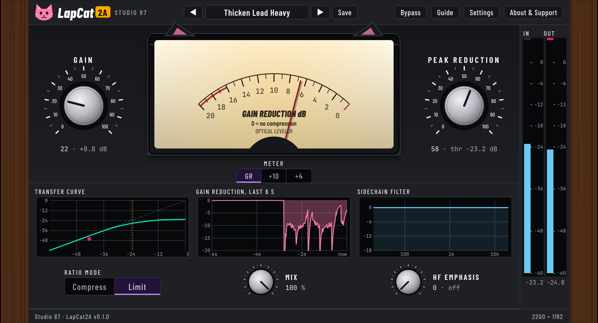

LapCat2A
A free, open source, cat-themed optical leveling amplifier (VST3). A behaviour model built from published measurements, not a circuit simulation. Made to thicken supersaw leads.

Download
Releases page: one zip with installers for Windows, macOS and Linux, the manual and checksums. This is a test build; the installers are unsigned, so your system may warn you.
Manual
LapCat2A-manual.pdf: interface tour, every control, presets and what was measured.
Design mockup
The interactive mockup the plugin window was ported from.
Source
github.com/SpeakingColors/LapCat2A. AGPL-3.0-or-later. Collects nothing, never uses the network.